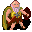

Old man¶{ .sprite }
| Type | NPC (can be spoken to; cannot be attacked) |
| Role | Starts Calomyran secrets; starts Rare delicacies |
| Found in | Fallhaven, Guynmart Castle |
| Entries in game data | 2 |
| Introduced | v0.7.0 or earlier |
2 entries in the game data
The game's data files define 2 separate characters named Old man. Andor's Trail stores a character as a new entry whenever it needs different behaviour, for example a different conversation at a later stage of a quest, a different location, or different combat statistics. Some entries represent the same person at different points in the story; others are different people who share a generic name. Here the entries differ in: conversation, location, appearance. This page combines them; each entry is described in its own section below.
| Entry | Type | Location | Role |
|---|---|---|---|
old_man |
NPC | Fallhaven: fallhaven_nw | starts Calomyran secrets |
guynmart_wise |
NPC | Guynmart Castle: guynmart_wood_10 | starts Rare delicacies |
Fallhaven, Fallhaven north-west (old_man)¶
Entry ID: old_man · Type: NPC · Role: Starts Calomyran secrets
Location: Fallhaven: fallhaven_nw
Quests¶
- Calomyran secrets: stages 10, 100
- Darkness in the Daylight: stages 130, 140
Dialogue simulator¶
Set the quest stages, items and other conditions that apply to your game, then start the conversation with Old man. The simulator applies the game's own rules: it performs the same silent checks, offers only the options that would be shown in the game, and applies their effects (quest stages, items handed over, rewards) as the conversation proceeds.
Rules verified against v0.8.18 game code (ConversationController.java) and dialogue data.
Dialogue (19 lines)
What the dialogue says, exactly as in the game files. Lines are listed once; links jump to the line a choice leads to.
fallhaven_oldman (silent check: the first matching branch below is taken)
- branch 1 (if reached stage 110 of Darkness in the Daylight; NOT reached stage 140 of Darkness in the Daylight) → dds_oldman_10
- branch 2 (if reached stage 100 of Calomyran secrets) → fallhaven_oldman_complete_2
- branch 3 (if reached stage 10 of Calomyran secrets) → fallhaven_oldman_continue
- branch 4 → fallhaven_oldman_1
dds_oldman_10 Old man: “Who are you? Not here to steal my books, are you?”
- “I once helped to find your book. Don't be rude!” → dds_oldman_20
fallhaven_oldman_complete_2 Old man: “Thank you so much for finding my book!”
fallhaven_oldman_continue Old man: “How is the search for my book going? It's called 'Calomyran Secrets'. Have you found my book?”
- “Yes, I found it.” (if hand over 1× Calomyran secrets) → fallhaven_oldman_complete
- “No, I have not found it yet.” → fallhaven_oldman_6
- “Could you tell me your story again please?” → fallhaven_oldman_2
fallhaven_oldman_1 Old man: “Would you help an old man please?”
- “Sure, what do you need help with?” → fallhaven_oldman_2
- “I might. Are we talking about some kind of reward?” → fallhaven_oldman_2
- “No, I won't help an old timer like you. Bye.” → conversation ends
dds_oldman_20 Old man: “Sorry, there seem to be folks who want to take my books and not return them.”
- “In fact, I'd like to borrow your copy of Calomyran Secrets.” → dds_oldman_30
fallhaven_oldman_complete Old man: “My book! Thank you, thank you! Where was it? No, don't tell me. Here, take these coins for your trouble.” — effects: sets stage 100 of Calomyran secrets, gives Gold coins
- “Thank you. Goodbye.” → conversation ends
- “At last, some gold. Bye.” → conversation ends
fallhaven_oldman_6 Old man: “I have no idea where it might be. You could go ask Arcir, he seems very fond of his books. [Points at the house to the south]” — effects: sets stage 10 of Calomyran secrets
- “OK, I'll go ask Arcir. Goodbye.” → conversation ends
fallhaven_oldman_2 Old man: “I recently lost a very valuable book of mine.”
- Next → fallhaven_oldman_3
dds_oldman_30 Old man: “No can do. It's too rare and precious.”
- “But Dhayavar is at stake!” → dds_oldman_40
fallhaven_oldman_3 Old man: “I know I had it with me yesterday. Now I can't seem to find it.”
- Next → fallhaven_oldman_4
dds_oldman_40 Old man: “Sounds serious. But, what's the book got to do with that?”
- “I need a chant from it to break a Kazaul spell.” → dds_oldman_50
fallhaven_oldman_4 Old man: “I never lose things! Someone must have stolen it, that's my guess.”
- Next → fallhaven_oldman_5
dds_oldman_50 Old man: “Copy it then.” — effects: sets stage 130 of Darkness in the Daylight
- “OK ... just a second ...” → dds_oldman_60
fallhaven_oldman_5 Old man: “Would you please go look for my book? It's called 'Calomyran Secrets'.”
- Next → fallhaven_oldman_6
dds_oldman_60 Old man: “Have you finished yet?”
- “[Talking to self, while reading] So, this is the chant. Wait, this is half a chant! The books says the rest of the…” → dds_oldman_62
dds_oldman_62 Old man: “And stop babbling to yourself!”
- “Done. Here's your book back, thank you.” → dds_oldman_64
dds_oldman_64 Old man: “Do I see greasy fingerprints there?”
- “However, it is not complete. Do you also have the book Azimyran Secrets?” → dds_oldman_70
dds_oldman_70 Old man: “No, sorry. Do let me know if you come across a copy.” — effects: sets stage 140 of Darkness in the Daylight
Version history¶
| Version | Change |
|---|---|
| v0.7.0 | Present in v0.7.0 (earliest release tracked) |
| v0.7.2 | Dialogue: 2 lines changed · text: “I have no idea where it might be. You could go ask Arcir, he seems ve…” → “I have no idea where it might be. You could go ask Arcir, he seems ve…” |
| v0.8.14 | Dialogue: 9 lines added, 1 line changed |
Verified against v0.8.18 and every earlier release back to v0.7.0 (game data compared release by release).
Technical information (old_man)
| Entry ID | old_man |
| Spawn group | fallhaven_oldman |
| Loot table | – |
| Conversation | fallhaven_oldman |
| Faction | – |
| Movement | – |
| Icon | monsters_men:5 |
| Defined in | res/raw/monsterlist_fallhaven_npcs.json |
Raw data:
{
"id": "old_man",
"name": "Old man",
"iconID": "monsters_men:5",
"monsterClass": "humanoid",
"spawnGroup": "fallhaven_oldman",
"phraseID": "fallhaven_oldman"
}
Guynmart Castle, Guynmart wood 10 (guynmart_wise)¶
Entry ID: guynmart_wise · Type: NPC · Role: Starts Rare delicacies
Location: Guynmart Castle: guynmart_wood_10
Quests¶
- Rare delicacies: stages 10, 20, 30, 90
- guynmart nondisplay (hidden flag): stage 35
Dialogue simulator¶
Set the quest stages, items and other conditions that apply to your game, then start the conversation with Old man. The simulator applies the game's own rules: it performs the same silent checks, offers only the options that would be shown in the game, and applies their effects (quest stages, items handed over, rewards) as the conversation proceeds.
Rules verified against v0.8.18 game code (ConversationController.java) and dialogue data.
Dialogue (42 lines)
What the dialogue says, exactly as in the game files. Lines are listed once; links jump to the line a choice leads to.
guynmart_wise_10 (silent check: the first matching branch below is taken)
- branch 1 (if reached stage 35 of guynmart nondisplay (hidden flag)) → guynmart_wise_14
- branch 2 → guynmart_wise_12
guynmart_wise_14 Old man: “Oh, it is you again. I am delighted!”
- “De-lighted indeed. Might you need anything?” → guynmart_wise_110
guynmart_wise_12 Old man: “Oh, a visitor. Come closer. Do not be afraid of me.”
- “I am not afraid. What happened to you?” → guynmart_wise_20
- “Eh, I have to go.” → conversation ends
guynmart_wise_110 (silent check: the first matching branch below is taken)
- branch 1 (if reached stage 90 of Rare delicacies) → guynmart_wise_116
- branch 2 (if reached stage 30 of Rare delicacies) → guynmart_wise_112
- branch 3 (if reached stage 20 of Rare delicacies) → guynmart_wise_170
- branch 4 (if reached stage 10 of Rare delicacies) → guynmart_wise_114
- branch 5 → guynmart_wise_118
guynmart_wise_20 Old man: “It happened in the mines of Mount Galmore. Don't ask any more, I do not wish to recall the memories. It was horrible.”
- Next → guynmart_wise_60
guynmart_wise_116 Old man: “No, thank you.”
- Next → guynmart_wise_900
guynmart_wise_112 Old man: “Do you bring bread and wine, together with my favorite cheddar?”
- “Yes, finally I got it. I hope the cheddar is still fresh after the long journey.” (if hand over 2× Bread; hand over 1× Charwood cheddar; hand over 1× Wine) → guynmart_wise_200
- “No, not yet.” → guynmart_wise_800
guynmart_wise_170 Old man: “...”
- Next → guynmart_wise_172
guynmart_wise_114 Old man: “Do you bring bread, cheese and wine?”
- “Yes, here you are. Enjoy it!” (if hand over 2× Bread; hand over 1× Cheese; hand over 1× Wine) → guynmart_wise_150
- “No, not yet.” → guynmart_wise_800
guynmart_wise_118 Old man: “Just recently my supply of bread has run low again. And I haven't seen eggs for such a long time...”
- “I can help with that. I can spare 2 loaves of bread.” (if hand over 2× Bread) → guynmart_wise_120
- “I could give you 3 eggs.” (if hand over 3× Eggs) → guynmart_wise_120
- “I could spare bread, some cheese and a bottle of red wine.” (if reached stage 10 of Rare delicacies; hand over 2× Bread; hand over 1× Cheese; hand over 1× Wine) → guynmart_wise_150
- “Unfortunately I have nothing I could give you.” → guynmart_wise_900
- “Sad for you. I have to go now. Bye.” → conversation ends
guynmart_wise_60 Old man: “When I returned here at last, people started to avoid me, whispering behind my back. I got very lonely.”
- Next → guynmart_wise_100
guynmart_wise_900 Old man: “It was nice to talk to you. Come again, as often as you like!”
- “Yes, we will meet again.” → conversation ends
guynmart_wise_200 Old man: “Cheddar! I can't believe it!” — effects: sets stage 90 of Rare delicacies
- Next → guynmart_wise_202
guynmart_wise_800 Old man: “Ah - I can see it before my eyes: a loaf of bread with a piece of delicious cheese! No, better two loaves of bread.”
- Next → guynmart_wise_802
guynmart_wise_172 Old man: “Eh...”
- “Yes?” → guynmart_wise_174
guynmart_wise_150 Old man: “What a feast! I have no words to thank you!”
- Next → guynmart_wise_160
guynmart_wise_120 Old man: “Thank you! Thank you very much!”
- Next → guynmart_wise_122
guynmart_wise_100 Old man: “Eventually I had enough of all the anxious, disturbed looks, so I came up here on this lonely hill.”
- Next → guynmart_wise_102
guynmart_wise_202 Old man: “[Eating]”
- Next → guynmart_wise_900
guynmart_wise_802 Old man: “Along with a bottle of good red wine!”
- Next → guynmart_wise_804
guynmart_wise_174 Old man: “now...”
- “Oh dear! Just say what is on your mind. What's up?” → guynmart_wise_180
guynmart_wise_160 Old man: “So take this ring as a token of my gratitude. Certain beings in the cellars of Guynmart Castle will not harm you if they see my ring on your finger.” — effects: gives 1× Old man's ring of bone, sets stage 20 of Rare delicacies
- “The ring looks interesting. Thank you.” → guynmart_wise_170
guynmart_wise_122 Old man: “Would it be really outrageous if I asked you to fulfill my heart's desire?”
- “Sorry, I really must go now.” → guynmart_wise_900
- “Just say what you would like. What can I do for you?” → guynmart_wise_130
guynmart_wise_102 Old man: “From time to time a friendly soul brings me some food, but no one stays for long. I have noticed that their pace uphill is usually much slower than back downhill.” — effects: sets stage 35 of guynmart nondisplay (hidden flag)
- Next → guynmart_wise_110
guynmart_wise_804 Old man: “The bread maybe still warm ...”
- Next → guynmart_wise_806
guynmart_wise_180 Old man: “The cheese that you brought - It was OK. But it is not the best cheese, you know? The best cheese is from Charwood.”
- “Oh?” → guynmart_wise_182
guynmart_wise_130 Old man: “I long for a meal with bread and cheese and a good bottle of wine. Oh, what would I give for that?” — effects: sets stage 10 of Rare delicacies
- “Here I have bread, some cheese and a bottle of red wine.” (if hand over 2× Bread; hand over 1× Cheese; hand over 1× Wine) → guynmart_wise_150
- “Really? That is all? I will come back soon.” → guynmart_wise_132
- “Be content with what you got, you greedy old man.” → conversation ends
guynmart_wise_806 Old man: “Sigh.”
- Next → guynmart_wise_810
guynmart_wise_182 Old man: “Their Cheddar is a dream! But they sell it only when you explicitly ask for it.” — effects: sets stage 30 of Rare delicacies
- “No problem. I will go and get some.” → guynmart_wise_190
- “I am not going to go all the way to Charwood for some cheddar.” (if reached stage 19 of Destined for great things) → conversation ends
- “Where is Charwood?” (if NOT reached stage 19 of Destined for great things) → conversation ends
guynmart_wise_132 Old man: “Oh yes - you get the best cheese in Charwood, if you don't mind!”
- “Charwood? That's not exactly next door...” (if reached stage 19 of Destined for great things) → conversation ends
- “I have heard of Charwood, but I don't know where it is.” (if reached stage 10 of Destined for great things; NOT reached stage 19 of Destined for great things) → conversation ends
- “I have heard of Charwood, but I don't know where it is.” (if reached stage 11 of Destined for great things; NOT reached stage 19 of Destined for great things) → conversation ends
- “Charwood? I have never heard of it.” → conversation ends
guynmart_wise_810 Old man: “Two loaves of bread! Hmmmm.”
- “Well ...” → guynmart_wise_812
guynmart_wise_190 Old man: “Great! I will wait for your return.”
guynmart_wise_812 Old man: “And cheese - how I missed it!”
- “But ...” → guynmart_wise_814
guynmart_wise_814 Old man: “A bottle of red wine with it, of course. Ooooh!”
- “I'm beginning to find your requests outrageous. I have to leave now.” → guynmart_wise_820
- “OK, OK, I understand.” → guynmart_wise_830
guynmart_wise_820 Old man: “Noo! Please, don't go! I didn't mean it.”
- “Forget it, bye.” → conversation ends
- “OK. Bread, cheese and vine - that's it?” → guynmart_wise_800
guynmart_wise_830 Old man: “Great! It's settled then, I'll wait for you here.”
- “I'll hurry now. See you soon.” → guynmart_wise_840
guynmart_wise_840 Old man: “Ah - bread ...”
- Next → guynmart_wise_841
guynmart_wise_841 (silent check: the first matching branch below is taken)
- branch 1 (if random chance (50%)) → guynmart_wise_842
- branch 2 → guynmart_wise_844
guynmart_wise_842 Old man: “And cheese ...”
- Next → guynmart_wise_843
guynmart_wise_844 Old man: “Vine ...”
- Next → guynmart_wise_845
guynmart_wise_843 (silent check: the first matching branch below is taken)
- branch 1 (if random chance (50%)) → guynmart_wise_840
- branch 2 → guynmart_wise_844
guynmart_wise_845 (silent check: the first matching branch below is taken)
- branch 1 (if random chance (50%)) → guynmart_wise_840
- branch 2 → guynmart_wise_842
Version history¶
| Version | Change |
|---|---|
| v0.7.2 | Added Dialogue: 27 lines added |
| v0.7.8 | Dialogue: 1 line changed · text: “Cheddar! I can't belive it!” → “Cheddar! I can't believe it!” |
| v0.7.13 | Dialogue: 1 line changed · text: “It happend in the mines of Mount Galmore. Don't ask any more, I do no…” → “It happened in the mines of Mount Galmore. Don't ask any more, I do n…” |
| v0.7.14 | Dialogue: 15 lines added, 2 lines changed |
Verified against v0.8.18 and every earlier release back to v0.7.0 (game data compared release by release).
Technical information (guynmart_wise)
| Entry ID | guynmart_wise |
| Spawn group | guynmart_wise |
| Loot table | – |
| Conversation | guynmart_wise_10 |
| Faction | – |
| Movement | – |
| Icon | monsters_karvis2:5 |
| Defined in | res/raw/monsterlist_guynmart.json |
Raw data:
{
"id": "guynmart_wise",
"name": "Old man",
"iconID": "monsters_karvis2:5",
"unique": 1,
"monsterClass": "humanoid",
"phraseID": "guynmart_wise_10"
}
Community notes¶
Written by players, not generated from game data. Observations: what players notice in-game · Lore: the in-world story · Trivia: real-world facts, references, development history · Theory / speculation: unconfirmed ideas; may just be unfinished content
Observations¶
No notes yet. Contributions are welcome: add a note.
Lore¶
No notes yet. Contributions are welcome: add a note.
Trivia¶
No notes yet. Contributions are welcome: add a note.
Theory / speculation¶
No notes yet. Contributions are welcome: add a note.
Data from v0.8.18